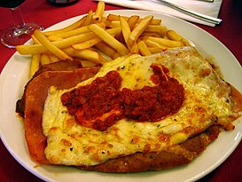

Napolitana

La milanesa a la napolitana es un plato de origen argentino típico de la gastronomía de países rioplatenses que tiene su origen en la influencia de la Inmigración italiana .
Consiste en una milanesa, habitualmente de carne, llevada al horno para ser recubierta como una pizza, con rodajas de tomate y queso mozzarella, añadiendo diversos ingredientes (como jamón o cebolla).
Habitualmente se sirve con una guarnición de papas fritas.
Ingredientes
- 4 pechugas ya rebozadas
- Queso cremoso
- Salsa de tomate a gusto
Pasos de la receta
- Calente el horno medio puse la fuente con aceite girasol
- Coloqué las pechugas 6 min de cada lado
- Agregó salsa de tomate natural con queso cremoso y chorrito de oliva por último espolvoreo con orégano 16 min en total. El punto es fuego medio para que no se reseque la pechuga.
- Puré de papas pa acompañar condimento manteca leche, sal, queso y savora una cucharadita de cada cosa